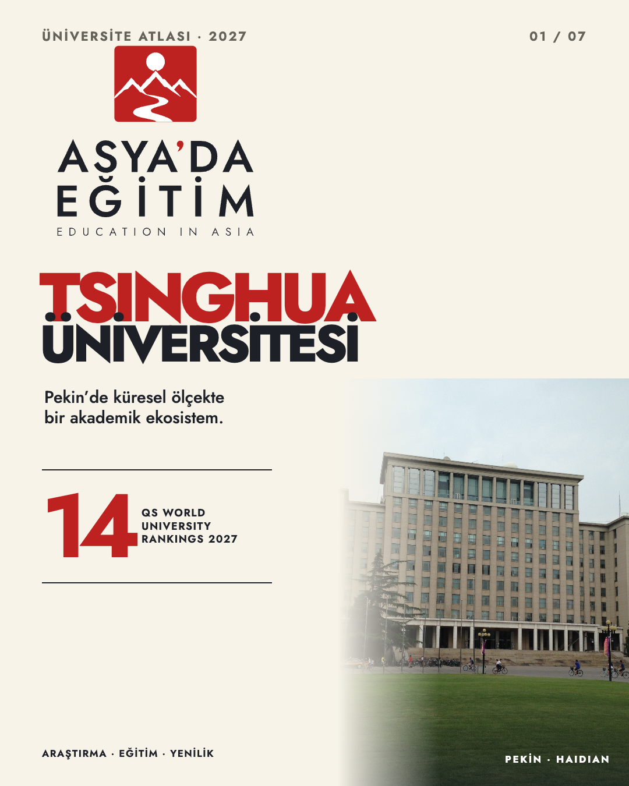
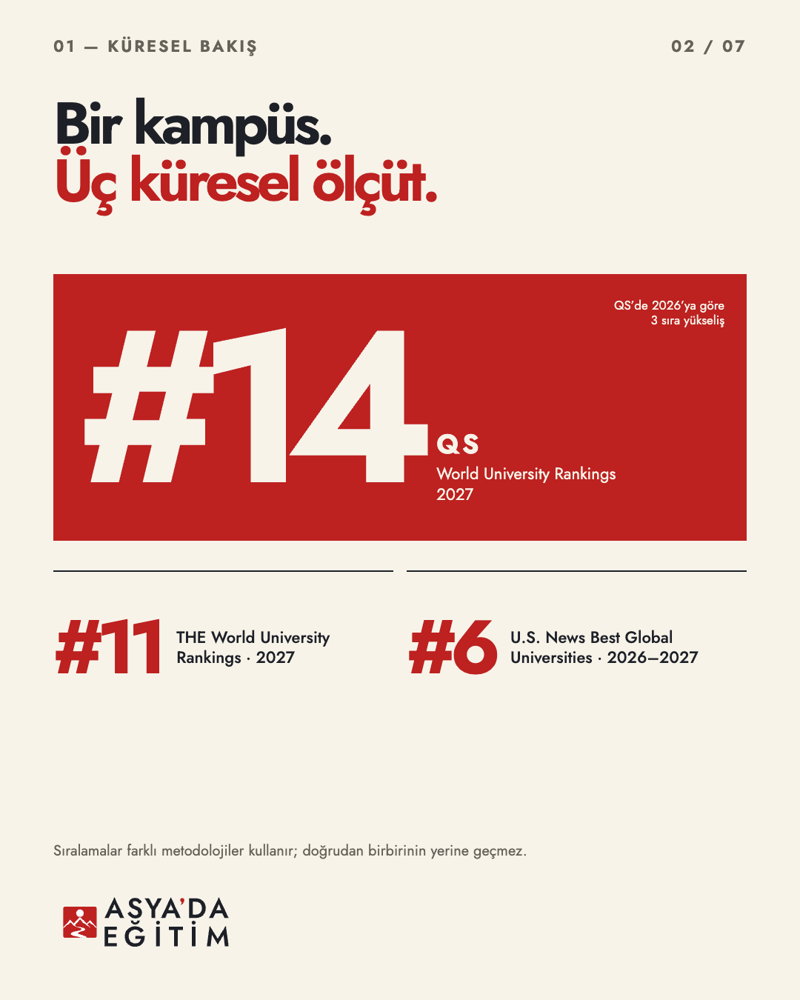
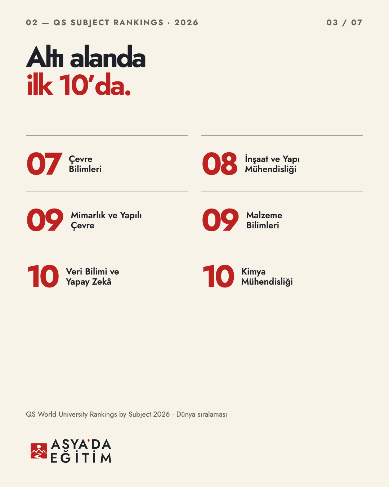
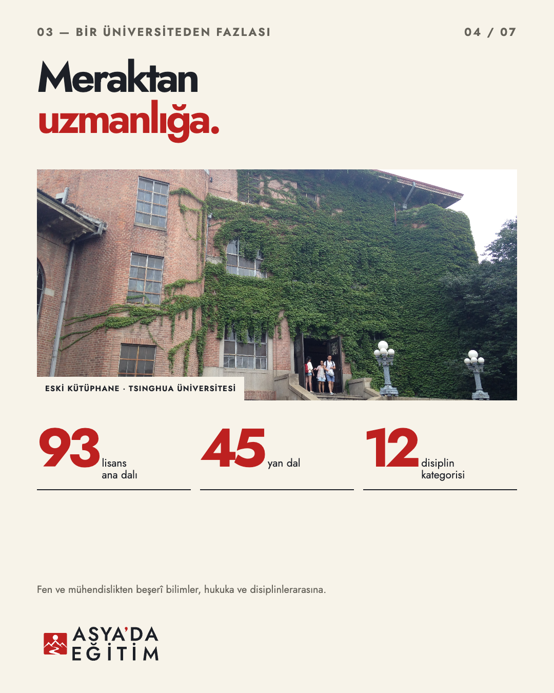
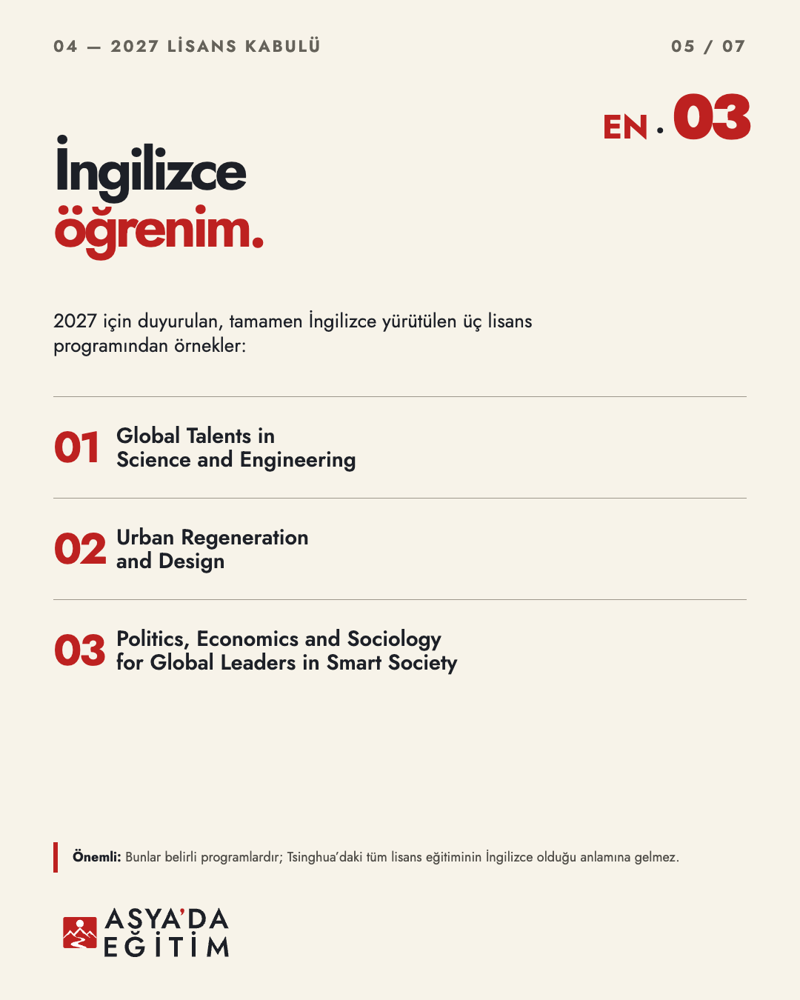
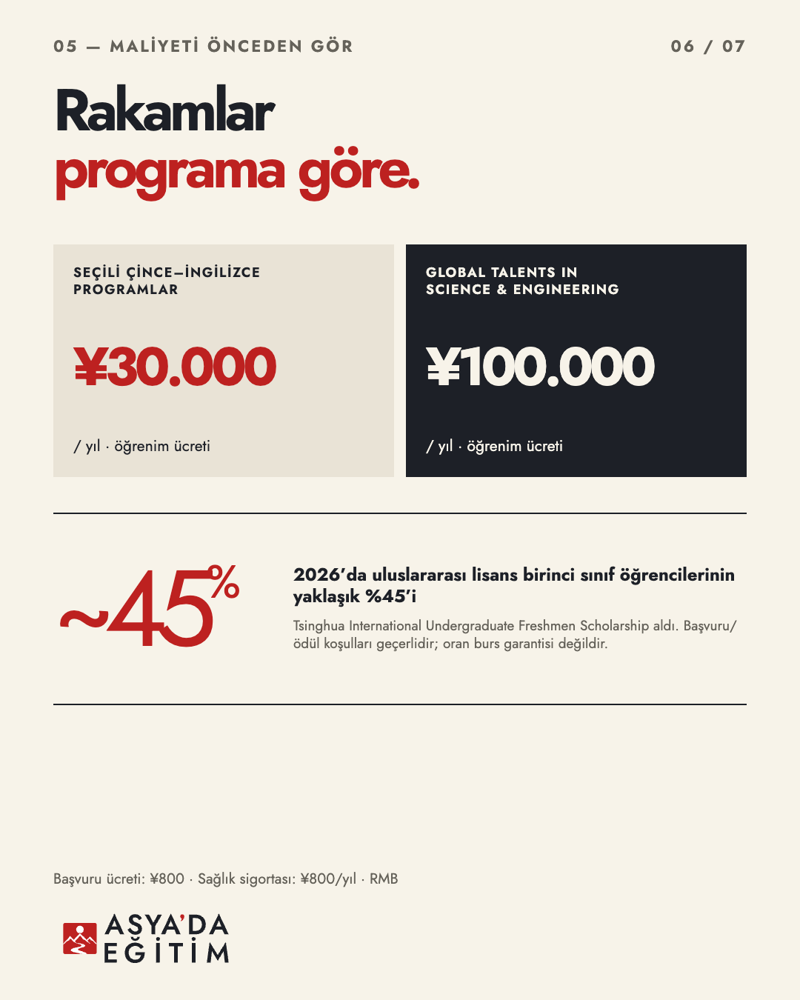
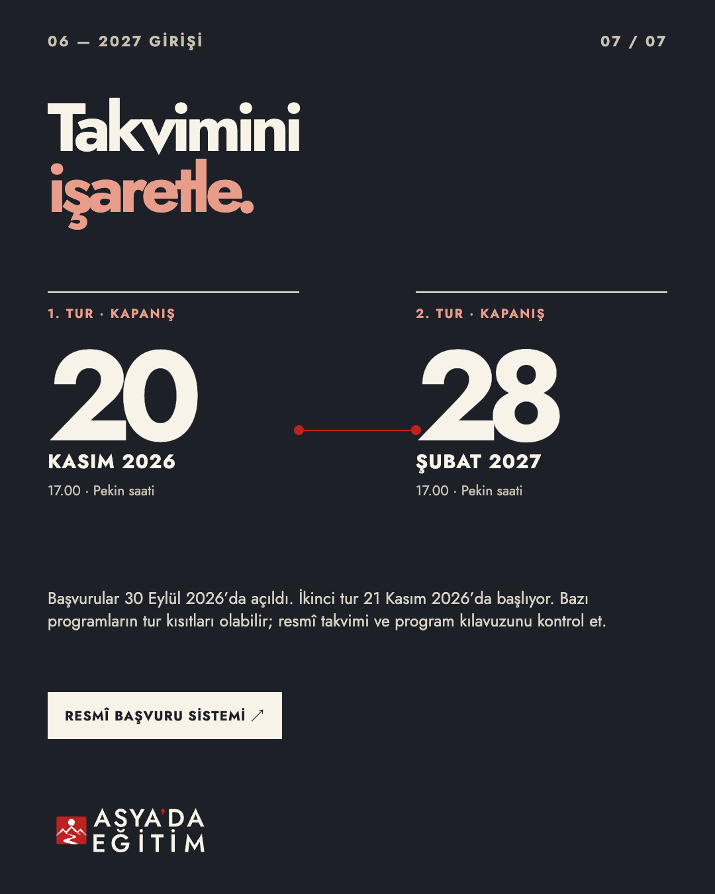

<!doctype html><meta charset="utf-8"><style>*{box-sizing:border-box}body{margin:0;background:#D8D2C7;font:14px Arial,sans-serif}.sheet{width:1360px;margin:auto;padding:28px;display:grid;grid-template-columns:repeat(3,1fr);gap:20px}article{background:#F7F3E9;padding:10px;box-shadow:0 4px 18px #1D202722}img{width:100%;display:block}b{display:block;padding:9px 2px 0;color:#1D2027;letter-spacing:.07em}</style><main class="sheet"><article><b>01 · KAPAK</b></article><article><b>02 · KÜRESEL SIRALAMALAR</b></article><article><b>03 · ALANLAR</b></article><article><b>04 · AKADEMİK GENİŞLİK</b></article><article><b>05 · İNGİLİZCE PROGRAMLAR</b></article><article><b>06 · ÜCRETLER & BURSLAR</b></article><article><b>07 · BAŞVURU TAKVİMİ</b></article></main>